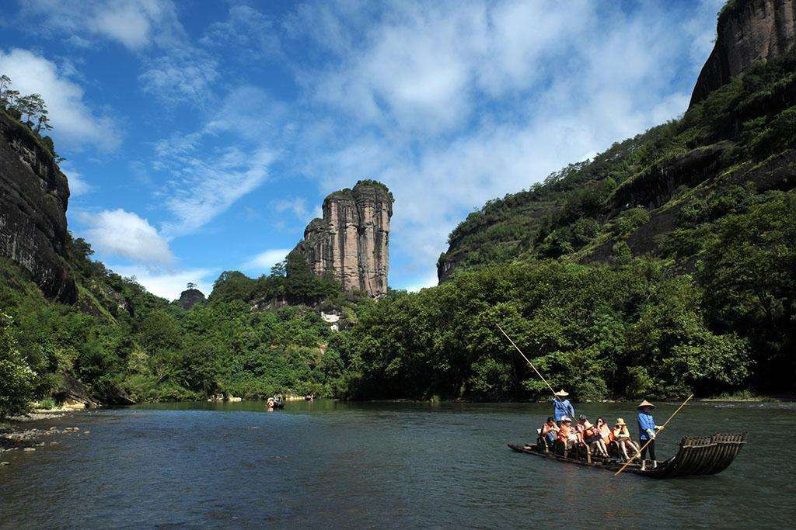

玉女峰
国家5A级旅游景区
开放时间：09:00-18:00

景点介绍
为武夷山的三十六名峰之一，亭亭玉立于二曲的溪南，高数十仞，以挺秀、窈窕见奇。峰壁秀润光洁，宛如玉石雕就，俨然是一位秀丽绝伦的少女。“插花临水一奇峰，玉骨冰肌处女容。”这是古代诗人对该峰风采神韵的真实写照。在峰壁中间，还有一条水平节理，就像玉女的细腰饰带。玉女峰是武夷山典型的柱状山之一，峰壁有两条垂直节理，把柱状体分为高度递增的三块削岩，山民把它衍化为比肩俏立的玉女三姐妹。最高一块的顶峰上秀林葱笼，花卉参簇;中间的一块，除了丹壁较红外，通体又呈白垩色；岩体最小的，则与一曲的大王峰隔溪遥对，山民衍化为“大姐爱戴花、二姐爱脂粉，三妹爱大王。”但以整座山来观赏，该峰着实酷肖一位袅袅婷婷、有姝丽之态的玉女，隔断曲水与一曲的大王峰遥遥相对，隔岸两峰就像一双含泪相思的情人。清朝文士陆廷灿诗句云:“亭亭独立水云隈，石作身心不受猜。纵有大王峰在望，肯教行雨学阳台！”玉女峰素称无径可以攀，但在峰壑半壁却留下先民活动的踪迹。该峰的“大姐”、“二姐”两岩的连体缝隙里还横架着两块虹桥板，民间俗称“鲁班尺”。